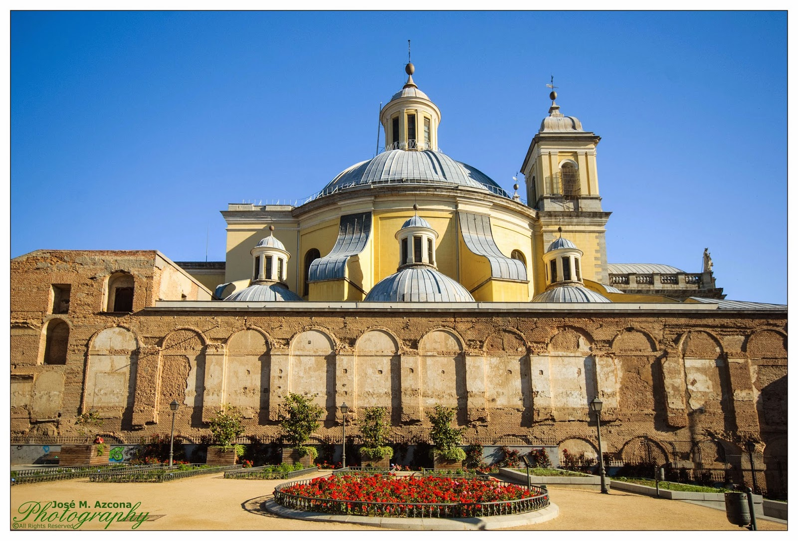
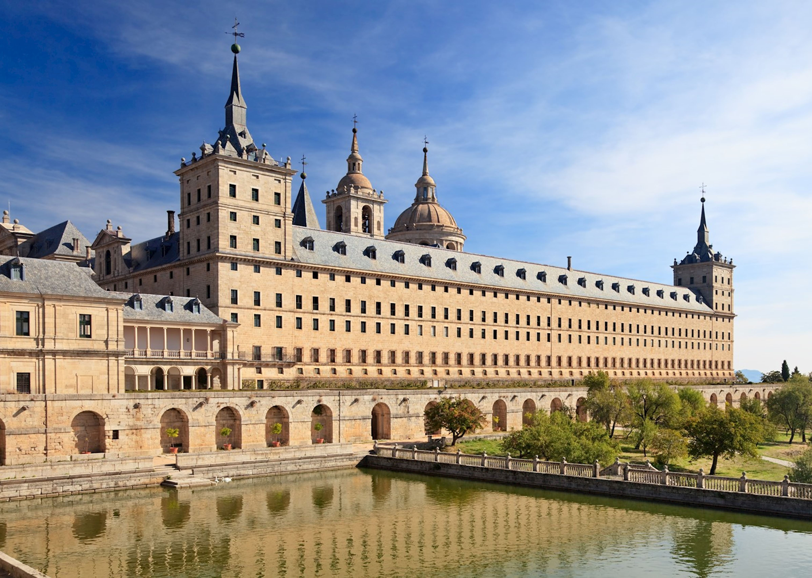

Tag 4:
Der letzte Tag in Madrid ist gekommen und nach 3 vollgepackten Tagen werden zwei letzte Monumente besucht: Die Basílica de San Francisco el Grande und El Escorial.
La Basílica de San Francisco el Grande
Mit der viert größten Kuppel in Europa und die erst größte Kupell in Spanien ist die Besuchung der Basilika eine gute Weise, den letzten Morgen in Madrid an zu gehen. Ihr künstleriche Inneres dekoriert mit Bildern von Goya oder Zurbarán ist etwas, dass man sich nicht entgehen lassen kann. Mehr Information über sie kann man hier finden.
Pause
Nachdem die Basilica besucht wurde, ist es an der Zeit eine Pause anzulegen, bevor der letzte Ort dieser Reise besichtigt wird
El Escorial
50 km von der Stadt Madrid entfernt, in der Mitte der Bergkette, kann man el Escorial entdecken. Das Monasterio y Real Sitio de San Lorenzo wird als die Hauptsehenswürdigkeit dieses Ortes bezeichnet und ist es Wert, besichtigt zu werden. Mehr Information über den Escorial und seiner Geschichte findet man in dieser Website.
